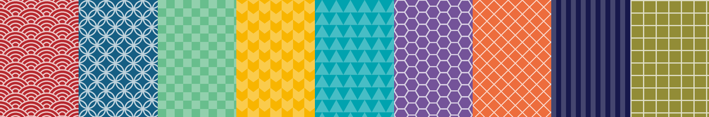
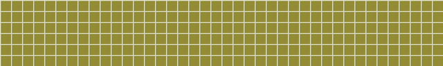

Unité 1
Nombres et argent
一 二 三 四 五 六 七 八 九 十 百 千 万 円

Module de formation · Japonais débutant
Un module de formation à distance pour apprendre à lire les 105 kanji de base du japonais (correspondant au niveau JLPT N5). Le module te permettra de les reconnaître, comprendre leur sens et les lire dans des mots ou dans des documents proches du réel.
Adultes francophones débutants qui lisent déjà les hiragana et les katakana. Le module se suit seul, à son rythme, sans durée imposée.
Ceci est une version de démonstration, les résultats ne sont pas enregistrés. Ce module à été pensé pour une réalisation dans Moodle ou il enregistre les tentatives et les notes.
Avance dans l'ordre, chaque unité réutilise les kanji des précédentes.
Unité 1
一 二 三 四 五 六 七 八 九 十 百 千 万 円
Unité 2
日 月 火 水 木 金 土 年 今 時 分 半 毎
Unité 3
人 男 女 子 父 母 友 目 耳 口 手 足
Unité 4
上 下 左 右 中 外 前 後 東 西 南 北
Unité 5
山 川 田 天 気 雨 花 空
Unité 6
大 小 高 安 新 古 長 多 少 白 赤 青
Unité 7
行 来 帰 会 食 飲 見 聞 読 書 話 買 出 入 立 休
Unité 8
学 校 先 生 語 本 文 字

Unité 9
車 電 駅 国 社 店 道 門 名 何
Une journée au Japon, de l'hôtel au dîner chez ゆき, sont des scènes qui plonge l'apprenant dans une activité plus immersive.
Ouvre la correction seulement après avoir terminé l'évaluation.